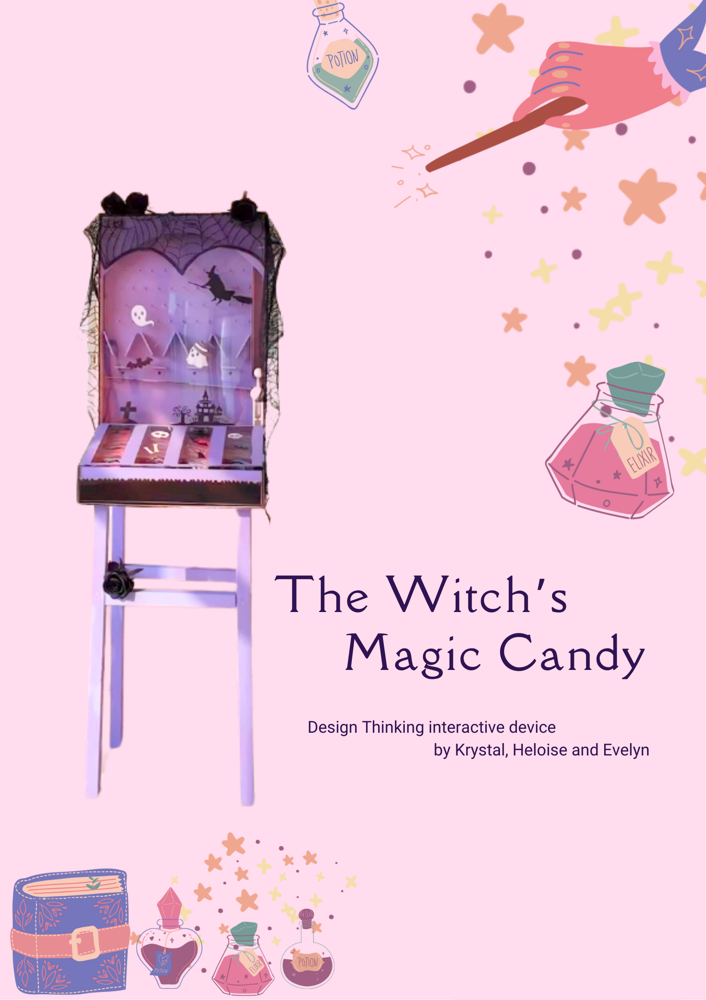

PHYSICAL COMPUTING
Interactions between Digital Bits and Physical Atoms.
Brief Absence
物理空间互动装置。模拟千禧年家庭空间，利用摇椅下的压力传感器控制老电视的通电状态。
按住电视屏幕模拟“坐下”
Cassini Division
跨媒介空间装置。玩家置身于土星环走廊中，通过手持模型对陨石成分进行分析。
移动鼠标进行成分检测

Scanning...
Design Thinking
设计思维课程成果展示。
擦除雾气查看细节
